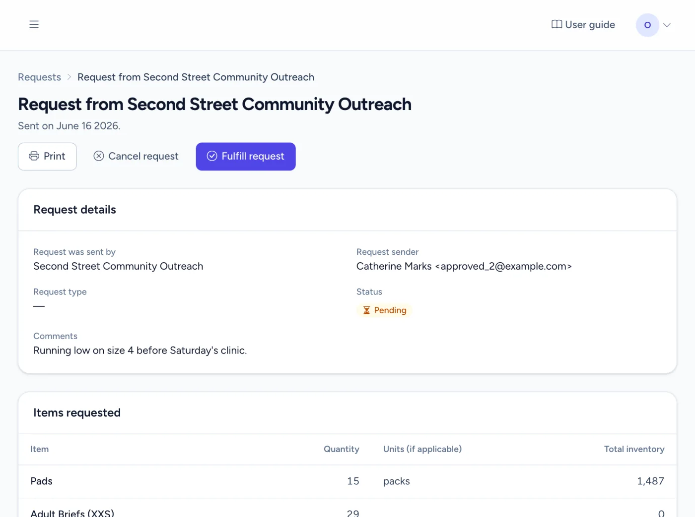
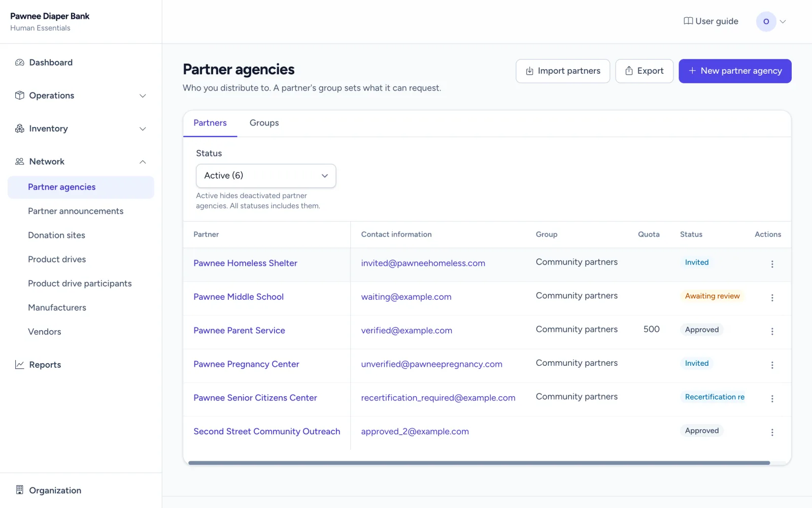

Know what you have, who needs it and where it went.
Human Essentials is free inventory software for diaper banks and essentials banks. Record what comes in, fill partner requests and report on every item, without the spreadsheets.
Free for every bank. Provided in association with the National Diaper Bank Network and the Alliance for Period Supplies.

What brings you here?
- I run an essentials bankYou collect diapers, period supplies or other essentials and give them out through partner agencies.Request an account
- I work at a partner agencyYour bank invites you. Use the email address the invitation was sent to.Log in
- I need diapers or period suppliesWe make the software banks use; we do not hand out supplies. A bank near you does.Find a bank near you
One place for the whole life of a box of diapers.
These are the real screens, with a demonstration bank's data. Nothing here is a drawing of what the product might look like.
Partners ask. You see it against your shelves.
Partner agencies request what their families need through their own portal. Each request opens beside your current stock, so you know what you can fill before you say yes.
- Partners ask by quantity, by number of people or by family
- Fulfill a request and it becomes a distribution

Every storage location, counted.
Stock is tracked for each place you keep it. Move it with a transfer, correct it with an adjustment, and check it with an audit.
- Pick a past date to see what was on the shelf that day
- Scan a barcode to add or remove stock

From request to pick up.
A distribution records essentials leaving your bank for a partner. Schedule the pick up or delivery, print the picklist, and mark it complete when it is gone.
- A calendar of pick ups and deliveries
- Printed picklists and receipts

Know every agency you serve.
Invite an agency, review its application, and recertify it when the time comes. Groups and quotas set what each one can ask for.
- Each partner's status at a glance
- Import your partner list from a spreadsheet

The numbers your funders ask for.
Eleven reports cover distributions, donations, purchases and requests, by item, by partner or by county. Most take a date range and export to CSV.
- Twelve-month trends for what came in and went out
- The annual survey figures, one page per year

Donations and purchases
Record what comes in, from whom, and what it is worth.
Product drives
Track each drive and who took part in it.
Kits
Bundle items into a kit and stock it like any other item.
Barcodes
Scan the barcode on the box, or create your own.
Reminders
Email partners before their request deadline.
Spreadsheet import
Bring in partners, storage locations, vendors and donation sites.
More than 200 banks already run on it.
Across the United States, at no cost to any of them.
- Registered banks
- 200+
- Children receiving diapers
- 3 million+
- People receiving period supplies
- 400,000+
- Cost to a bank
- $0
“Human Essentials has taken our diaper distribution to the next level. We no longer have to worry about how to track our incoming and outgoing inventory, and having all our products and data tracked in different ways in different documents and systems. Human Essentials has saved us time, money, energy and many, many headaches. The system is extremely intuitive and user-friendly and we are so grateful to have it.”
“Finally, an inventory management system designed specifically for the unique needs of diaper banks!”
Built by volunteers, and it stays free.
Human Essentials is made by Ruby for Good, a non-profit whose volunteers write software for organizations doing good. It was first built alongside PDX Diaper Bank.
- Free, hosted for you
- No license fee, no per-user price and nothing to install.
- Open source
- Every line is public under the MIT license. Read the code on GitHub.
- A digital public good
- Recognized by the Digital Public Goods Alliance.
Questions banks ask first.
Is it really free?
Yes. There is no charge to any bank. Volunteers build it and Ruby for Good hosts it.
Who is it for?
Diaper banks, period supply banks and other essentials banks that give out supplies through partner agencies. You request an account, and we set your bank up.
I need diapers or period supplies. Can I get them here?
Not from us. We make the software that banks use. Find a bank near you, and it can tell you which local agencies give out supplies.
I work at a partner agency. How do I get in?
Your bank invites you. Once you accept the invitation, log in with that email address.
Can we bring the records we already have?
Yes. Partners, storage locations with their starting inventory, vendors and donation sites can each be imported from a spreadsheet.
Who can see our data?
Your bank's records belong to your bank, and other banks cannot see them. The privacy policy says what we keep and why.
Put your bank on Human Essentials.
Tell us about your bank and we will set up your account. Questions first? Write to info@humanessentials.app.